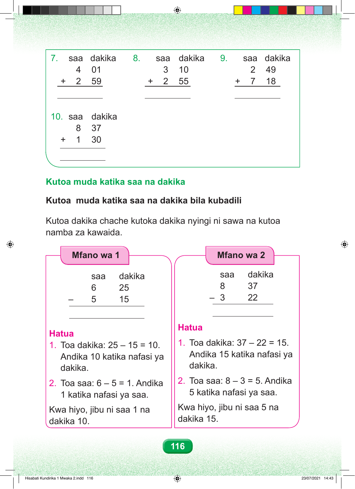

7. saa dakika 8. saa dakika 9. saa dakika 4 01 3 10 2 49 + 2 59 + 2 55 + 7 18 10. saa dakika 8 37 + 1 30 116 Kutoa muda katika saa na dakika Kutoa muda katika saa na dakika bila kubadili Kutoa dakika chache kutoka dakika nyingi ni sawa na kutoa namba za kawaida. Mfano wa 1 Mfano wa 2 saa dakika saa dakika 6 25 8 37 – 5 15 – 3 22 Hatua Hatua 1. Toa dakika: 37 – 22 = 15. 1. Toa dakika: 25 – 15 = 10. Andika 15 katika nafasi ya Andika 10 katika nafasi ya dakika. dakika. 2. Toa saa: 8 – 3 = 5. Andika 2. Toa saa: 6 – 5 = 1. Andika 5 katika nafasi ya saa. 1 katika nafasi ya saa. Kwa hiyo, jibu ni saa 5 na Kwa hiyo, jibu ni saa 1 na dakika 15. dakika 10. Hisabati Kundirika 1 Mwaka 2.indd 116 23/07/2021 14:43